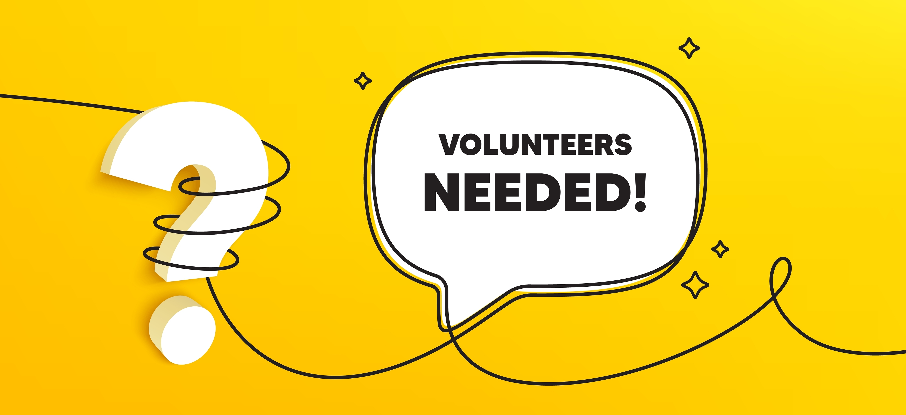

It's 0K If You're Not a Runner — We Need Volunteers Too
Every hour, someone in the U.S. dies from oral cancer. Events like the Houston Oral Cancer Foundation 5K Run play a vital role in raising awareness and bringing life-saving education to our community — but they can't happen without volunteers.
Make an Impact Beyond the Finish Line
It takes a special kind of person to step up and give their time for a cause like this. If you're willing to go the extra mile — or extra 'K' in this case — your help is needed to keep the event running smoothly, from registration to cheering on runners to post-race cleanup. Along the way, you'll connect with other like-minded individuals, make new friends, and be part of a team working toward something bigger than themselves.
Remaining Volunteer Roles Include:
- Registration Help (almost full)
- Cheer & Support Crew (almost full)
- Post-Run Cleanup
- Event Breakdown Team
Volunteer today and help turn awareness into action.